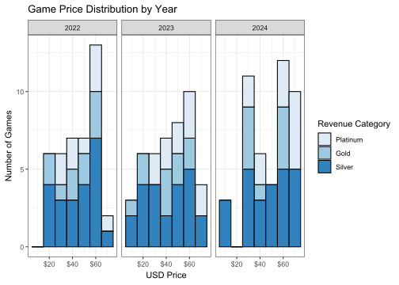

Introduction
Thousands of exciting new video games are published for PCs every year. Among these new video games, their characteristics and features widely vary. Yet, only a small number of them sell well enough to be financially noteworthy. In particular, the most popular PC video game platform, Steam, showcases its best selling new video games on a yearly basis. In this article, we will examine Steam’s best selling video games across different categories to understand what it is that potentially makes them sell so well.
Why Focus on Steam?
Created by Valve Software in 2003, Steam has served as a convenient service to distribute and play PC video games.1 Since its inception, Steam has become the dominant video game platform on PC with more than 36 million registered users2 across the world3 and has amassed a library of more than 30 thousand games4.
While there are other online game platforms on PC, only a few are on a comparable scale to Steam in terms of library size and registered user count. The most significant ones are Microsoft’s Xbox service on PC and Epic Game’s Epic Game Store.
In the case of Microsoft, it has increasingly offered its once-exclusive Xbox games on Steam in recent years, such that almost all of its games are readily available on Steam now. Third party games are usually released simultaneously on Steam and Xbox, so sales data will likely be identical across both platforms. More importantly for this analysis, the data on Xbox’s best selling new games on PC is not easily accessible like Steam’s data.
As for the Epic Game Store, the number of third party games being published on its platform is minuscule when compared to Steam. The Epic Game Store is significantly younger than Steam, meaning that the data available does not go so far back. Although the Epic Game Store has a larger PC user base of 295 million5, most of these users are concentrated in playing a few pre-existing games, one of which being Fortnite. In essence, the Epic Games Store lacks robust data for an analysis of the most popular new games sold on PC.
Finding the Best Selling Games
Every year, Steam announces its best games of the year in terms of revenue earned and peak player count. While Steam has been announcing its best games since 2017, only the webpages for 2022 and onward still exist. For the newly released games of a year, their ranking is calculated from the revenue earned in the first two weeks after launch6. I assume Steam includes revenue earned from game keys sold by third party retailers as well. Now instead of specifying each game’s revenue rank, the games are grouped into a top selling category of either platinum, gold, or silver. From what I have seen, games that sold in the hundreds of thousands to low millions are listed as silver, games sold in the few millions or more are listed as gold, and games that sold beyond that are listed as platinum.
As of December 2025, Steam has added a bronze rank to its top selling categories. This analysis will be updated in due time to include the recently released 2025 data and additional bronze ranked games. Unfortunately, Steam has taken down its webpage for 2021 and it is possible that the webpage for 2022 will eventually disappear.
Should you wish to see the best selling game lists directly, links are offered here:
Analysing the Games
Acquiring the Data
To understand what makes the best selling games potentially stand out from the competition, their data needs be extracted for analysis. However, Steam does not seem to have official APIs for its store data. Thus, a web-scraping script was made in R to collect the data of all the best selling games. 2022 was selected as the starting year because 2021 lacked a silver category, which would have skewed the distribution of the data with extra gold and platinum games.
In making a web scraping script for this analysis, some unexpected challenges came about. The first was that the data points for each game were downloaded from their respective storefront webpage, which meant interacting with numerous web elements that were not always fixed in position. The next challenge was with handling absent values or values that did not follow a specified format. The last challenge was with Steam’s age verification page acting as a blockade. After accounting for all these troubles, my script was able to successfully collect the data of the 150 games from the years 2022 to 2024. Further explanations of the web scraping issues encountered are covered in their respective sections.
The Pricing
Let us begin with the prices of the games. Game prices were collected in USD because sales taxes are not included in the price and that games sold in developed markets have similar prices when exchange rates are factored in. The exchange rate table below is provided as a reference.
| Currency | Value |
|---|---|
| EUR | 0.85 |
| GBP | 0.75 |
| AUD | 1.55 |
| CAD | 1.40 |
| JPY | 155 |
| CNY | 7.10 |
Now onto the graph. Free to play games and de-listed games are excluded from this section.
From the above graph, we can see that even though game pricing is varied, a $60 list price is the most common. Note that in 2024, numerous game companies did increase their standard retail price to $70. In the dataset, the median list price is $50 whereas the average list price is $48 ± 5 (depending on year and revenue category).
It is important to consider that games sold on Steam tend to have regional pricing in place. Regional pricing is to price a game in line with the economic conditions of a country, rather than at a price that was simply converted from the base currency of the game. The effect of regional pricing is at its greatest for games sold in developing countries. Taking an example game from the dataset: Black Myth Wukong is listed at $60 USD. However, in its home market China the price is 268 CNY which is 37.75 USD, that is a 37% reduction.
Outlier Games
Some of the games in the dataset are either free to own or unavailable to purchase. Let us take a look at these games before moving on to the next sections.
Free to Play Games
Since only 5% of the games from the dataset are free to play, they are presented in a table. The main highlight is that all the games are action oriented, with two of the games having card-based gameplay. Interestingly, the user ratings are not the best for these games. It’s likely because players who otherwise would not play these games still give them a try because they are free. Or these free to play games may not have the friendliest monetisation schemes.
Delisted Games
7% of the best selling games from the dataset have already been withdrawn from Steam’s storefront. Except for Multiversus, all the games are about sports or motorsports. As for why the games have been removed so soon, it could simply be because of licensing restrictions. Another reason could be that it is more profitable to have players buy a whole new game every year than to release add-ons for the existing games.
The Genres
On Steam, publishers give their games a set of official genre tags to help players know more about the games they intend to play. Below is an interactive graph that lets you view the most common genre tags among the games in the dataset.
From the above interactive graph, the most popular genre tags by far are action, adventure, and RPG. Action essentially means a game with challenges, such as combat. Adventure refers to a game that has a story. RPG stands for Role Playing Game. RPGs can be thought of as adventure games that offer deep character customisation.
Why would action games be the most popular? For a start, action as a subject matter can be conveyed well in the form a a video game. Whereas action in films can be rough or short lived, and limited in books, video games allow players the opportunity to engage in continuous, safe, and fun action. Furthermore, if we assume that the general demographic of Steam consists of young men, then having the action genre be the most popular is self explanatory.
To give some examples of what games from the different genres are like, a representative action game can be Tekken 8. While the game somewhat has a story, it is primarily about two opponents engaged in intense hand-to-hand combat. A representative adventure game can be Stray. The game is about a lonesome cat uncovering the mysteries of a grotty futuristic city. A representative RPG game can be Dragon Quest III. That game is about a young hero and his (or her) allies who set off on a grand quest to defeat the villainous fiend that threatens their fantasy world. Genre tags can be treated as suggestions on what a game is like. Even Steam does not seem to have strong guidelines on what genres a game should be put into.
The Publishers
92 publishers released the 150 games in the dataset. However, only some of the publishers had more than one best selling game. Rather than overwhelming ourselves with these one-off publishers, let us examine the more successful publishers in the interactive graph below. Only 10 publishers are shown, sorted by the number of games they have in the dataset.
The most popular publisher overall is Electronic Arts (EA). This is mainly because EA owns some of the most globally popular video game series. To name a few of the series: FIFA, Formula 1, The Sims, Battlefield, and Need for Speed. Considering that EA already has its own PC platform, Origin/EA App, the additional strong sales of its games on Steam signifies its dominance in the PC game market.
PlayStation and SEGA follow EA in having the most best selling games in the dataset. PlayStation’s appearance is significant. Until recently, games published by PlayStation were only available on its own consoles. I believe that Sony Interactive Entertainment, the company in charge of PlayStation, recognised that the PC gaming market has matured to the stage where convincing a sizeable portion of current PC players to get a PlayStation 5 to play exclusive games would not be economically possible. In a similar move to Microsoft, Sony has released most of its commercially successful games onto Steam over the past 5 years.
Sony and Microsoft are not alone in bringing over their exclusive games to Steam. SEGA, Square Enix, Ubisoft, and other large publishers have been releasing more of their existing games on Steam. In recent years, many of these publishers now simultaneously launch their games on consoles and Steam. Previously, particularly before the Covid-19 pandemic, many large publishers would only release some of their games on PC one year after their release on consoles and they would often be available only on their own distribution platforms. Even though PC game platform competition is now dwindling, online sentiment of Steam’s natural monopolisation has been positive. PC players generally prefer Steam when given the choice.
The Age Ratings
Now for the age ratings. In the graph below, games rated for teenagers and adults sold the most on Steam. This is understandable as Steam is meant for users aged 13 and above. Most of the age 3 games in the dataset are just sports games. Games primarily meant for children do not seem to be that popular on Steam. If we were to think about the popular games children usually play, they are often played on mobile devices, game consoles such as the Nintendo Switch or PlayStation 4/5, or on PC platforms other than Steam.

To learn more about PEGI, click here. The PEGI age rating system is made for Europe. However, it is used in some other regions of the world as well. A PEGI rating recommends the minimum age for a video game based on how appropriate its subject matter is. PEGI was chosen because of its intuitiveness and popularity. PEGI’s age ratings tend to be in line with other organisations’ ratings. To learn more about the age rating systems of other organisations, click here.
When collecting the PEGI age ratings for the games on Steam, I discovered that many of the games surprisingly did not have an age rating label on Steam. Thus, I had to manually fill in the missing values with the ones from PEGI’s website. Still, not all the games in the dataset have been rated by PEGI, so some missing values are to be expected.
The Release Dates
Let us find out what are the most and least popular months to publish a game on Steam in the interactive graph below.
Surprisingly, September is the most popular month overall. Considering that is the month many people return to school in, I was expecting the summer or the end of the year to be the most popular. Interestingly, July is the least popular month for publishing games. I do not have a definite answer for the results here, so this is something worth following up on.
The Languages
On Steam, the language support of a game is recognised by three categories: interface, subtitles, and full audio. The interface consists of the text elements of a game, such as the menus, manuals, and safety warnings. Subtitles are the descriptive texts of a game’s audio. Full audio means that the game has voiced dialogue.
In the dataset, I found that if a game has a supported interface language, then the subtitles (if they exist) will be available in that supported language. Thus, support for interfaces and subtitles overlap. Not all games in the dataset have any voiced dialogue, so their support for full audio is blank. Let us examine the supported languages further in the interactive graph below.
While all the games in the dataset support English interfaces, almost all of them support French and German interfaces. It is a pleasure to see so many games be available in multiple languages. Perhaps in this case it is the least common languages that are the most interesting ones. Battlebit Remastered is the one game in the dataset that supports Belarusian, Estonian, Macedonian, and Slovak. Only Farming Simulator 25 supports Romanian. Three Playstation games support Croatian, specifically The Last of Us Part I, Ghost of Tschushima Directors Cut, and God of War Ragnarok. For comparison, Steam’s interface is available in 26 languages.7
For Full Audio, only Microsoft Flight Simulator 2024 (MSFS 24) supports Finnish, Norwegian, and Swedish. I believe that for MSFS 24, the majority of its voices are produced by AI, that was the case for MSFS 2020 at least. S.T.A.L.K.E.R. 2: Heart of Chornobyl is the one game with Ukrainian full audio support. The Last of Us Part I and God of War Ragnarok have Greek full audio support. The Last of Us Part I and MSFS 24 are the only games to have Turkish full audio support.
The Recommended Graphics Cards
For every game on Steam, publishers or developers can list the minimum and recommended graphics cards for their games. Usually, if a player’s PC meets the recommended requirements, then he or she will be able to enjoy the game on high graphics setting at a resolution of 1920x1080 at 60 frames per second. The interactive graph below reveals the most commonly recommended graphics cards for the games in the dataset.
To summarise the findings, graphic cards that are designed to play the latest games (at the time of their release) at 1920x1080 or 2560x1440 on high graphics settings are the most commonly recommended graphics cards. Currently, the most commonly owned graphics card among Steam users is the Nvidia GeForce RTX 4060 for laptops.8 That is a formidable processor. Therefore, many Steam players will be able to enjoy the majority of the best selling games in the dataset at the recommended graphics settings.
One issue with collecting this data is that publishers are not obligated to follow a standard format when writing out the requirements for their games. Thus, a lot of parsing and manual correcting were needed to make the graphics cards data uniform. As an example, some game requirements would have the “Nvidia GeForce GTX 1660” abbreviated as “GTX 1660”.
The User Ratings
On Steam, users can leave a review that either recommends or does not recommend the game they played. From the dataset, more than 5 million reviews posted within one month of a game’s release date were counted with 4.1 million of them being positive (81.85%) and 900 thousand being negative (18.15%).
To read the box plot figure below, the coloured boxes represent the middle 50% of the user rating data points. The black line in the coloured box is the median of the data points. The lines extending out of the boxes represent the minimum and maximum values of the data points. Data points placed beyond the lines are outliers. A stretched out box with long lines implies that the data points are quite scattered. For a greater explanation of box plots, click here.

Overall, most games tend to have a rating in the range of 60% to 90%. Regarding the outliers in the above figure, we have two of them: NBA 2K24 at 13% and Microsoft Flight Simulator 2024 (MSFS 24) at 38%. NBA 2K24 is by far the worst rated game in the dataset and is one of the lowest rated games on Steam to date. MSFS 24, while low, ended up as an outlier because the rest of the games in its category were rated significantly higher. Generally, PC players post negative ratings when they experience technical problems such as audio glitches or visual stuttering. For MSFS 24, many of its user reviews complained about download and streaming problems. Many of the reviews also complained about the simulator feeling like an unfinished product.
To know more about the worst rated games in the dataset, below is a table of the games with a user rating less than 60%. These games make up 14% of the dataset.
Conclusion
After examining the 150 best selling games on Steam, some noticeable features stand out. For a start, $60 USD games are most commonly sought after by Steam users. However, games across the price range are still being bought up. The action, adventure, and RPG genres are the most popular genres. Players enjoy a story with challenge and customisation. Large high-budget publishers produce many of the best selling games. Naturally, their games are designed for and marketed to a varied global audience. Games rated for ages 12 and up are purchased the most by Steam users. People looking to publish games designed for children may not expect to earn the greatest revenue on Steam.
The most popular month to publish a game in is September. Whereas the least popular month to publish a game in is July. Early Autumn, late Winter, and late Spring are the most common time periods for a game to be released. In terms of language support, the most popular languages are English, German, French, Spanish, Japanese, Chinese, and Korean. For games with voiced audio, English is the #1 most supported language. The most commonly recommended graphics cards are approximately in line with the graphics cards owned by Steam users. Lastly, Steam users generally leave a positive recommendation for the best selling games they played.
If you are interested in exploring the dataset, click here to access it from Github.
Footnotes
About Valve https://www.valvesoftware.com/en/about↩︎
Steam Daily User Count https://store.steampowered.com/charts↩︎
Countries Steam is Used in https://store.steampowered.com/stats/content/↩︎
About Steam https://store.steampowered.com/about/↩︎
Epic Games Store 2024 Year In Review https://store.epicgames.com/en-US/news/epic-games-store-2024-year-in-review↩︎
Explanation of Sales Ranking https://help.steampowered.com/en/faqs/view/6C17-2BC1-2A01-9B76↩︎
Steam Language-Support Information https://partner.steamgames.com/doc/store/localization/languages↩︎
Hardware Used by Steam Users: https://store.steampowered.com/hwsurvey/↩︎